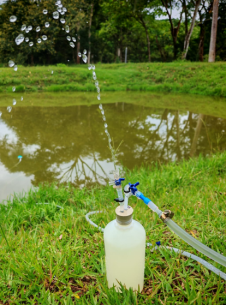
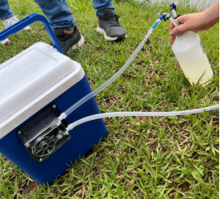

Bomba peristáltica
Toma de muestras de agua
Nota: Se realiza una replica por cada muestra tomada.
- Selección del punto de muestreo.
- Preparación y verificación del equipo.
- Extracción de agua con bomba peristáltica.
- Renovación del volumen de la botella (≥ 2 volúmenes).
- Sellado y conservación de la muestra.

